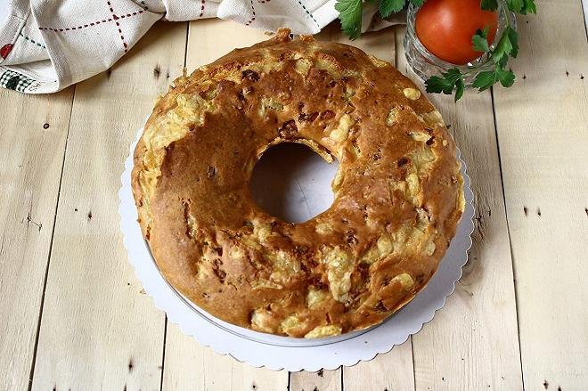
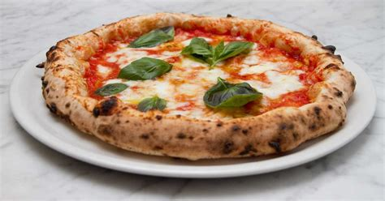
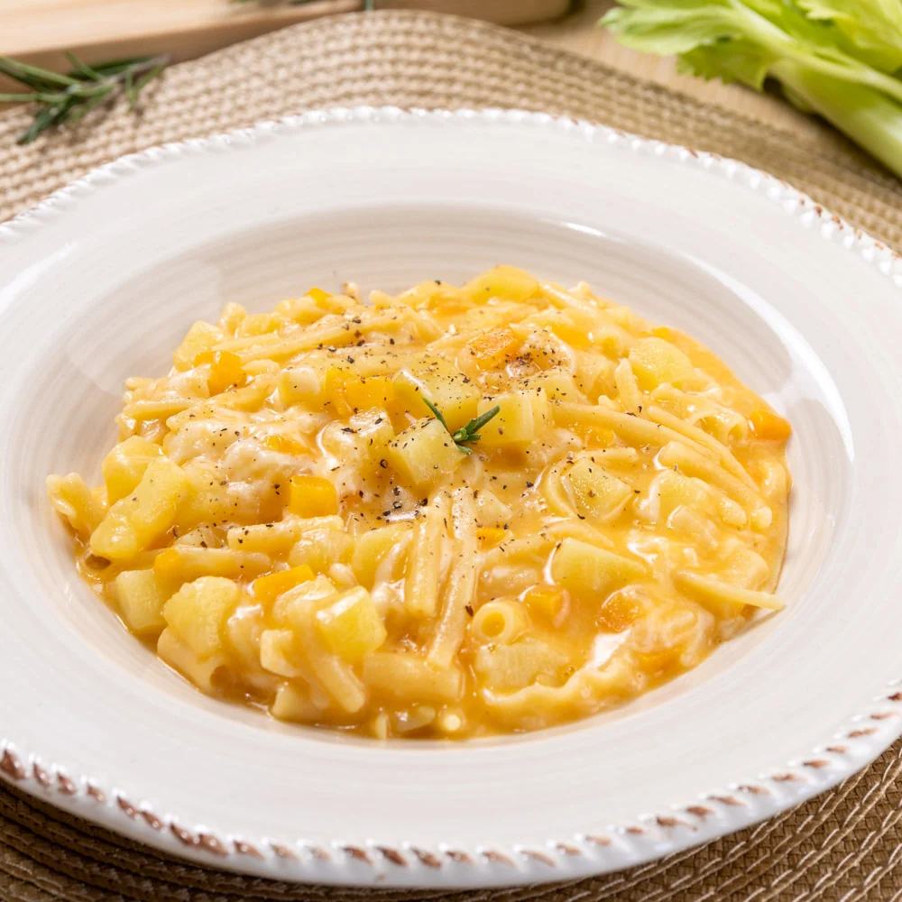

Questi sono alcuni dei piatti più iconici della cucina campana!

Il tortano è un tipico rustico napoletano, simile al casatiello, ma con una differenza fondamentale: il tortano non contiene uova nell'impasto. È farcito con salumi e formaggi, rendendolo un piatto ricco e saporito, perfetto per le festività pasquali.

PizzaLa pizza è uno dei piatti più famosi al mondo, originario di Napoli. La pizza napoletana è caratterizzata da un impasto morbido e leggero, condita con pomodoro, mozzarella e basilico. È un simbolo della cucina italiana e un vero e proprio patrimonio culturale.

Pasta e patate con provolaLa pasta e patate con provola è un piatto tipico della cucina campana, preparato con pasta, patate e provola. È un piatto semplice ma delizioso, che rappresenta la tradizione culinaria della regione.